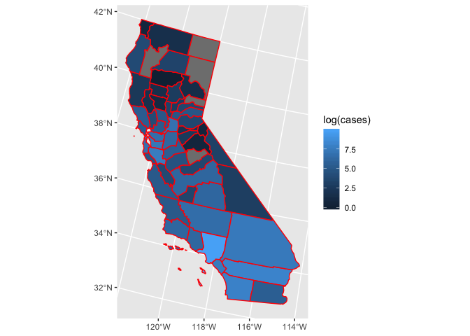
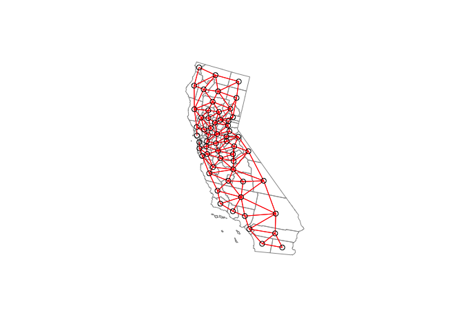
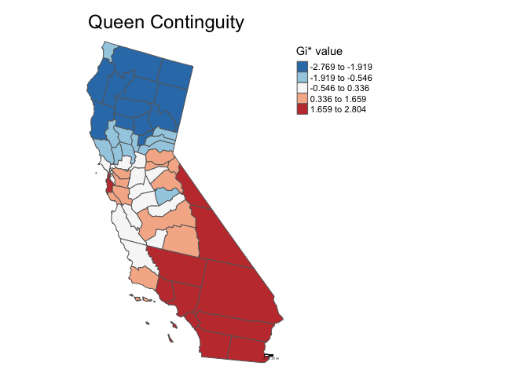
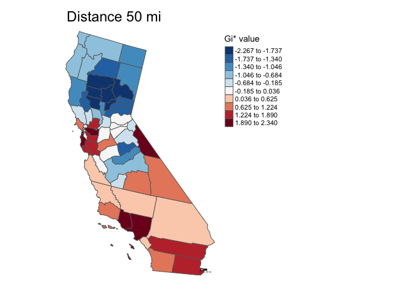
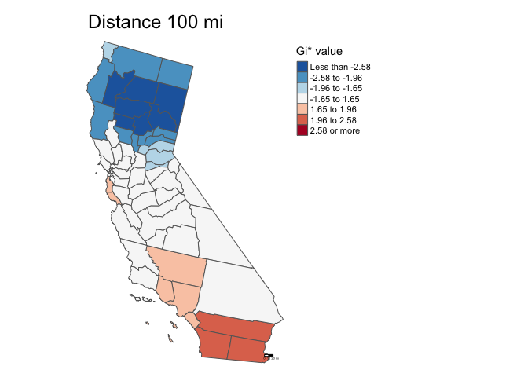

Below is a run through of Part 1 of Assignment 5.
counties <- st_read("countiescovid.shp")## Reading layer `countiescovid' from data source `/Users/noli/Documents/UCD/teaching/GEO 200CN/lab/geo200cn.github.io/countiescovid.shp' using driver `ESRI Shapefile'
## Simple feature collection with 3108 features and 5 fields
## geometry type: MULTIPOLYGON
## dimension: XY
## bbox: xmin: -2031905 ymin: -2114925 xmax: 2516374 ymax: 732103.3
## epsg (SRID): NA
## proj4string: +proj=laea +lat_0=45 +lon_0=-100 +x_0=0 +y_0=0 +a=6370997 +b=6370997 +units=m +no_defscounties.sp <- as(counties, "Spatial")# Let's just look at California.
ca <- counties %>%
filter(state == "California")
ca.sp <- ca %>%
as("Spatial")# How many counties in CA?
nrow(ca)## [1] 58# quick map
ggplot() +
geom_sf(data=ca, mapping = aes(fill = log(cases)), color = "red")
Before I begin the rest of the steps, I’ll get the centroids.
# get centroids of polygons
ca.coords <- coordinates(ca.sp)Here we define the neighborhood using Queen Contiguity, and from this definition we assign weights to neighbors, and finally use Monte Carlo simulation to calculate the significance of our test of spatial autocorrelation (Moran’s I).
# create neighborhood matrix
# Note that strictly speaking, the R object is not matrix
ca_q_nb <- poly2nb(ca.sp, queen=T)
ca_q_nb## Neighbour list object:
## Number of regions: 58
## Number of nonzero links: 276
## Percentage nonzero weights: 8.204518
## Average number of links: 4.758621# head
# take a look at the first 6 counties in the neighborhood matrix
ca_q_nb[1:6]## [[1]]
## [1] 9 28 39 49 57
##
## [[2]]
## [1] 3 10 11 26 35
##
## [[3]]
## [1] 2 5 11 20 35 55
##
## [[4]]
## [1] 7 27 34 37
##
## [[5]]
## [1] 3 20 24 55
##
## [[6]]
## [1] 12 26 38 47 54 56# create spatial weights matrix
# Note that strictly speaking, the R object is not matrix
ca_q_w <- nb2listw(ca_q_nb, style="W", zero.policy= TRUE)
ca_q_w## Characteristics of weights list object:
## Neighbour list object:
## Number of regions: 58
## Number of nonzero links: 276
## Percentage nonzero weights: 8.204518
## Average number of links: 4.758621
##
## Weights style: W
## Weights constants summary:
## n nn S0 S1 S2
## W 58 3364 58 26.8846 238.3498Note, you may run across an error when running this code above. When I run ca_q_w by itself, its actually invoking the print function, but specified to work with the output of nb2listw. So, you need to tell it to ignore regions with no neighbors, just like you did in nb2listw. So instead, you could type print(ca_q_w, zero.policy = TRUE).
# quick look at the weights
ca_q_w$weights[1:6]## [[1]]
## [1] 0.2 0.2 0.2 0.2 0.2
##
## [[2]]
## [1] 0.2 0.2 0.2 0.2 0.2
##
## [[3]]
## [1] 0.1666667 0.1666667 0.1666667 0.1666667 0.1666667 0.1666667
##
## [[4]]
## [1] 0.25 0.25 0.25 0.25
##
## [[5]]
## [1] 0.25 0.25 0.25 0.25
##
## [[6]]
## [1] 0.1666667 0.1666667 0.1666667 0.1666667 0.1666667 0.1666667# quick plot
plot(ca.sp, border = "grey60")
plot(ca_q_w, coords = ca.coords, add=T, col=2)
# global moran's I using Monte Carlo
moran.mc(ca.sp$crate, ca_q_w, nsim=999, zero.policy= TRUE)##
## Monte-Carlo simulation of Moran I
##
## data: ca.sp$crate
## weights: ca_q_w
## number of simulations + 1: 1000
##
## statistic = 0.41994, observed rank = 1000, p-value = 0.001
## alternative hypothesis: greaterInsert your interpretation here.
50 miles is 80467.2 meters.
ca_nb_dist50 <- dnearneigh(ca.coords,
d1 = 0,
d2 = 80467.2,
row.names = ca.sp$county)
ca_nb_dist50_w <-nb2listw(ca_nb_dist50, style="W", zero.policy= TRUE)Note, the row.names argument must be unique. So for the entire US, the county column is actually not unique. Try using countyFIPS.
# global moran's I using Monte Carlo
moran.mc(ca.sp$crate, ca_nb_dist50_w, nsim=999, zero.policy= TRUE)##
## Monte-Carlo simulation of Moran I
##
## data: ca.sp$crate
## weights: ca_nb_dist50_w
## number of simulations + 1: 1000
##
## statistic = 0.19799, observed rank = 970, p-value = 0.03
## alternative hypothesis: greaterInsert your interpretation here.
100 mi is 160934.4 meters.
ca_nb_dist100 <- dnearneigh(ca.coords,
d1 = 0,
d2 = 160934.4,
row.names = ca.sp$county)
ca_nb_dist100_w <-nb2listw(ca_nb_dist50, style="W", zero.policy= TRUE)# global moran's I using Monte Carlo
moran.mc(ca.sp$crate, ca_nb_dist100_w, nsim=999, zero.policy= TRUE)##
## Monte-Carlo simulation of Moran I
##
## data: ca.sp$crate
## weights: ca_nb_dist100_w
## number of simulations + 1: 1000
##
## statistic = 0.19799, observed rank = 989, p-value = 0.011
## alternative hypothesis: greaterInsert your interpretation here.
# lets get neighboods, ie spatial structure matrix, including selves
ca_q_nb.self <- include.self(ca_q_nb)
# create weights matrix
ca_q_nb.self_w <- nb2listw(ca_q_nb.self, style="W", zero.policy= TRUE)
# use G*
localgstar <- localG(ca.sp$crate, ca_q_nb.self_w, zero.policy = TRUE)
# Examine summary values
summary(localgstar)## Min. 1st Qu. Median Mean 3rd Qu. Max.
## -2.76901 -1.52049 0.02529 -0.10387 1.08722 2.80376Insert your interpretation here.
# turn back into sf object for mapping
queen_sf <- mutate(ca, localgstar = as.numeric(localgstar))# map with quintile
tm_shape(queen_sf, unit = "mi") +
tm_polygons(col = "localgstar",
title = "Gi* value",
palette = "-RdBu",
style = "quantile") +
tm_scale_bar(breaks = c(0, 10, 20), text.size = 1) +
tm_layout(frame = F, main.title = "Queen Continguity",
legend.outside = T) ## Variable "localgstar" contains positive and negative values, so midpoint is set to 0. Set midpoint = NA to show the full spectrum of the color palette.
ca_nb_dist50.self <- include.self(ca_nb_dist50)
ca_nb_dist50.self_w <- nb2listw(ca_nb_dist50.self , style="W", zero.policy= TRUE)
localgstar <- localG(ca.sp$crate, ca_nb_dist50.self_w, zero.policy = TRUE)
summary(localgstar)## Min. 1st Qu. Median Mean 3rd Qu. Max.
## -2.2674 -1.1579 -0.1851 -0.1357 0.9700 2.3396Insert your interpretation here.
dist50_sf <- mutate(ca, localgstar = as.numeric(localgstar))# map with decile
tm_shape(dist50_sf, unit = "mi") +
tm_polygons(col = "localgstar",
title = "Gi* value",
palette = "-RdBu",
style = "quantile",
n = 10) +
tm_scale_bar(breaks = c(0, 10, 20), text.size = 1) +
tm_layout(frame = F, main.title = "Distance 50 mi",
legend.outside = T) ## Variable "localgstar" contains positive and negative values, so midpoint is set to 0. Set midpoint = NA to show the full spectrum of the color palette.
ca_nb_dist100.self <- include.self(ca_nb_dist100)
ca_nb_dist100.self_w <- nb2listw(ca_nb_dist100.self , style="W", zero.policy= TRUE)
localgstar <- localG(ca.sp$crate, ca_nb_dist100.self_w, zero.policy = TRUE)
summary(localgstar)## Min. 1st Qu. Median Mean 3rd Qu. Max.
## -3.6885 -2.0339 -0.2704 -0.4514 0.9357 2.3869Insert your interpretation here.
dist100_sf <- mutate(ca, localgstar = as.numeric(localgstar))breaks <- c(-Inf, -2.58, -1.96, -1.65, 1.65, 1.96, 2.58, Inf)
# map with z-scores as break
tm_shape(dist100_sf, unit = "mi") +
tm_polygons(col = "localgstar", title = "Gi* value", palette = "-RdBu",
breaks = breaks) +
tm_scale_bar(breaks = c(0, 10, 20), text.size = 1) +
tm_layout(frame = F, main.title = "Distance 100 mi",
legend.outside = T)## Variable "localgstar" contains positive and negative values, so midpoint is set to 0. Set midpoint = NA to show the full spectrum of the color palette.
Read BBR p 182-3 on residuals and p 174-7 beginning with “Estimation of a Linear Regression Function” for an introduction on fitting a line.
Also, these may be useful references as well from Statistics by Jim: fitted values and residuals.
Again, BBR p174 should be useful in answering this question.
Use equation 4-4 and the values reported under “Coefficients” and “Estimate” when running summary(lm1).
The simplest way to do this in R would be to use two functions followed by each other in the same code chunk, plot and lines, like so:
plot(your_response_variable ~ your_independent_variable, your_data_frame)
lines(your_data_frame$your_response_variable,
predict(your_lm_object),
col = "blue")Replace all the arguments beginning with your_ with the appropriate names.
Where does the name poorPoor actually come from? Well because the poor column in zctanyc is qualitative, the output for the Poor category in the column poor is given the prefix poor. You’ll see in the next question, when running lm on the borough column, a similar naming scheme: “boroughBrooklyn”, “boroughQueens”, etc.
For more information on interpeting the “Coefficients” in the summary output of lm, check out this article on Regression with Categorical Variables.
See Question 5.
The r^2 is described beginning on the bottom of p. 182 in BBR. This article may be of use as well.